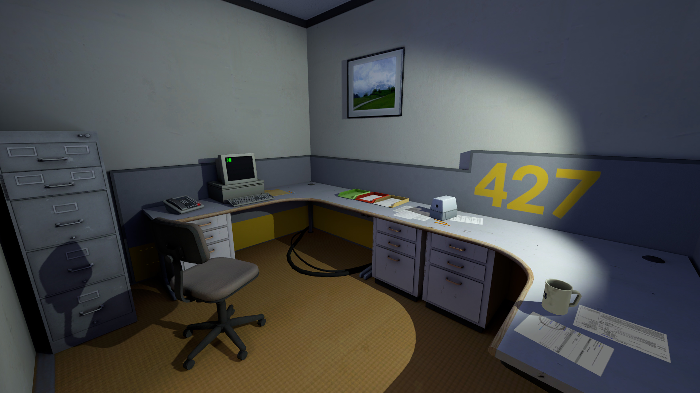

CONTAINS SPOILERS FOR THE STANLEY PARABLE GAME
Does not include the Stanley Parable Deluxe information! Has not been edited for writing mistakes!


Info deck (Click me!)
The Stanley Parable is a 2014 game that follows the player character, Stanley, through different endings in a looping gameplay sequence narrated by a disembodied voice, The Narrator. At the time of its release, it was a critic of the “choose your own ending” game genre, where every choice ultimately leads down a pre-determined path and there’s only a "resemblance" to actual autonomy. Fandom depictions of the game touch on the codependence of Stanley and the Narrator, Stanley's bid for freedom, or how both Stanley and the Narrator are trapped by the narrative. This AU takes inspiration from To The Moon, the transmigration system from I Have To Be A Great Villain and Sad-ist's Clock 0ut AU!
This is written in the format of an interactive video game but it's not! I just like the idea of writing freely, without the many restraints of traditional formatting.
I've made each part collapsible for easier scrolling!
Cut-Scene #1: And So It Begins.
Welcome, [REDACTED]! You've been chosen to become part of the E.L.R.S. system - the Experimental Life Rewriting System. Your role as a Life Writer gives you the opportunity to help aimless souls rewrite their life, achieve satisfaction, and move onto their next life. Are you ready to begin?
[Yes] [No]
REDACTED is a Life Writer for E.L.R.S (pronounced Elris by…just himself, honestly) with years of experience. He assumes years - time doesn't pass where he lives. “Lives” - also doubtful, as he doesn't eat, doesn't sleep, drinks tea but only for the comfort it provides. His cubicle resembles those bare offices in mega corporate buildings with no personality, and outside, what stares back is the bleak expanse of space. It's a tedious, lonely experience.
His days are spent writing at a block of a computer, watching through pixels as someone else dreams up their ideal life. Any command he writes changes their environment, and anything he says into the fast food employee headset is nudged into the person's subconscious as a subtle suggestion.
REDACTED has helped many escape limbo (not the official name in the system, but the system's too damn complicated, with a 200 page employee manual nobody probably reads). Frustrated 50-somethings who did nothing but work all their life, 20-somethings who died too soon while focusing on exams, 10-year-olds who don't really understand why death came for them, and really, just anyone the system faxes a profile on.
His newest assignment is a Stanley REDACTED; a thirty-something married man who spent his days dreaming at his desk. With a wife and two sons at home, he worked a well-paying job where he did what he was told to do, went home to a nice, middle-class apartment and did nothing extraordinary. REDACTED scratched his head, perplexed at the printed profile's “FANTASIES” section, where all the bullet points included blacked out sentences and no actual information.
REDACTED sighed - this would be one of those cases. The ones where they themselves had no goals, no objectives, only the need to feel something great. He scanned the man's start line - office 427 - and started writing a mini adventure, one rather boring, if only to get the case out of his terminal and move on to the next.

Cut-Scene #2: Stanley, the Protagonist.
Welcome, [Stanley]! You've been chosen to become part of the E.L.R.S. system - the Experimental Life Rewriting System. Your role as a Life Writer gives you the opportunity to help aimless souls rewrite their life, achieve satisfaction, and move onto their next life. Are you ready to begin?
[Yes] [No]
The headset suggestions, for some strange reason, did. not. work. Stanley, the gigantic fool, refused to heed any pointed advice and instead wandered through his dreamscape with the audacity of someone in his own home. Newsflash, Stanley! That was REDACTED's coded environment right there, and if you pressed on with no remorse, he had no time to write it out.
God, what an irritating man. Unlike other souls he'd directed, the man was a quiet thing with no words for even himself, suspicious of everything and with the hands of a raccoon, prodding and picking at anything material. REDACTED had to write locked doors so the man followed some semblance of a path for gods sake. Gone was the original plotline, gone was the random generator plotline the system had as a back-up, gone was Stanley's sanity, for the man even jumped off a bridge when a certain plotline didn't satisfy him.
Of course, the man never remembered his previous dreamscape attempts. Dying after death was possible in the dreamscape, but it really just meant no memories remained.
There were no instructions in the employee manual for this - REDACTED knew because he'd read all 200 pages after Stanley's third suicide dreamscape run. REDACTED tried overriding the code, tried spawning Stanley in a different world, a different dreamscape, but the system wouldn't allow it, for some unfathomable reason.
All in all, REDACTED was stumped, and as long as he was stumped and he couldn't write a satisfactory story, Stanley would be stumped too.
After a certain point, REDACTED began to speak to Stanley rather candidly through the headset. The man wouldn't remember. It got to the point it seemed a shame.
Character Profiles
Hi! This profile and casting section is completely optional! It contains slight spoilers too. If you've already read everything and have particular images of the characters in your head, I suggest not scrolling past this point. It's much funner when your imagination runs wild.